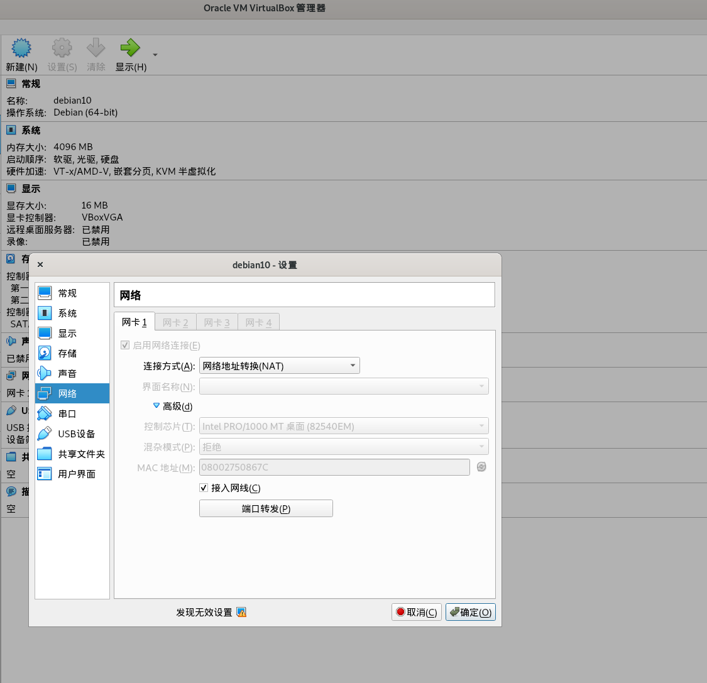
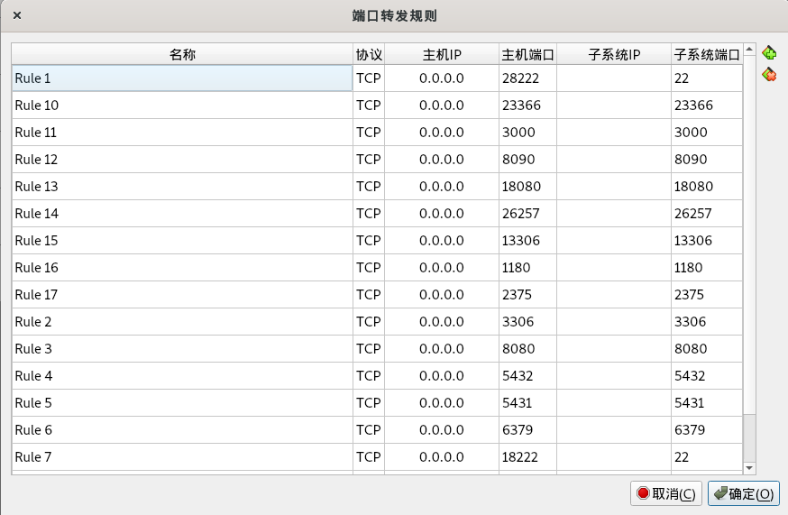

vm-nat网络配置
虚拟机端口映射
在使用vm作为开发测试机的时候首先碰到的问题，就是部署在虚拟机里的服务，比如mysql，怎样在host主机访问呢？
首先整理下概念
- Host：宿主机
- Guest: 虚机
这里记录下我的NAT方法
打开VirtualBox中的这台虚机-->设置-->网络-->高级-->端口转发


其中每一行是一个端口映射，主机IP固定写0.0.0.0，子系统IP不用写。主机端口写映射到主机的端口，子系统端口写虚机要映射出来的端口。
比如要映射虚拟机的22端口到宿主机，这里由于宿主机的22端口被宿主机的sshd占用了，所以这里不能再用22端口映射，所以改成了28222
| 名称 | 协议 | 主机IP | 主机端口 | 子系统IP | 子系统端口 |
|---|---|---|---|---|---|
| Rule1 | TCP | 0.0.0.0 | 28222 | 22 |
这样在宿主机上通过ssh tom@127.0.0.1 -p 28222 这条命令就连到虚拟机的ssh了。
以此类推，其他3306、6379等端口也可以从虚拟机映射到宿主机，如果宿主机已经占用了端口那么就改个未被占用的端口，自行记录对应关系。
docker容器端口映射
以此类推，如果在vm中起docker容器，首先要把容器的端口映射出来。
docker run -d --name mysql57 --restart always -p 3306:3306 mysql:5.7.32
比如这句mysql容器，首先把容器3306端口映射到容器的宿主机(vm)，然后再把vm的3306映射到vm的宿主机。
这样通过两层网络转发，就可以在宿主机直接访问容器的3306数据库了。